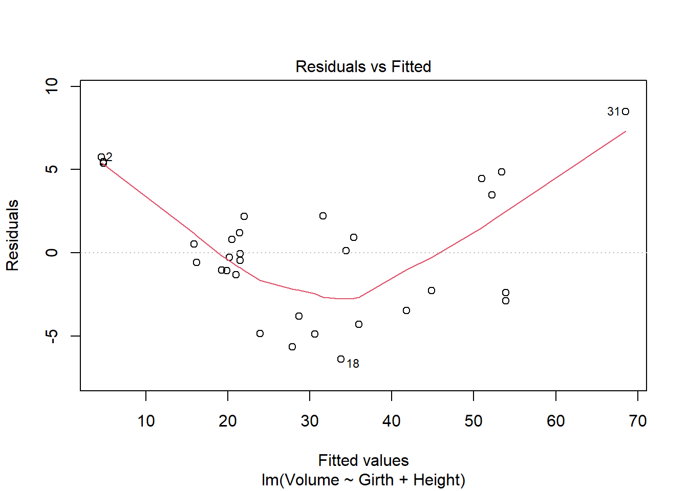
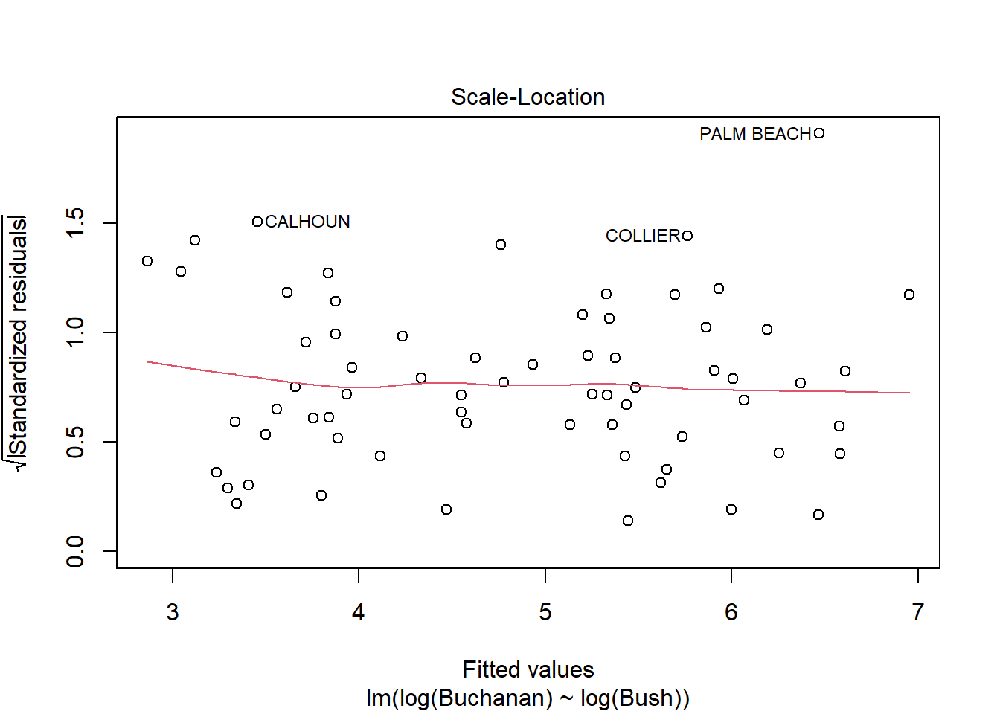
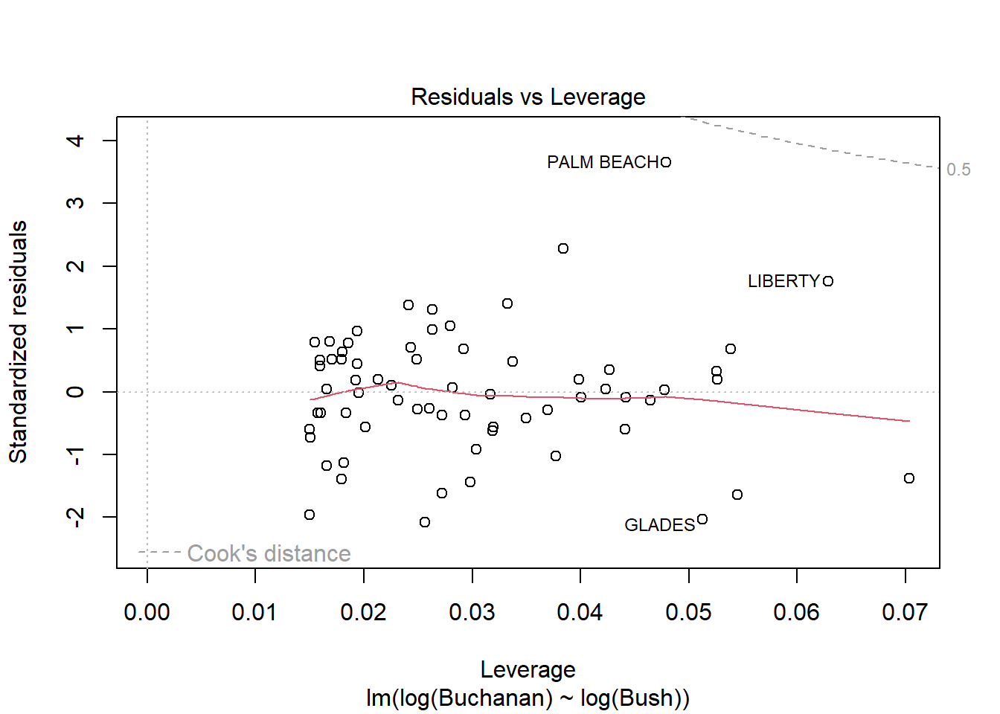

------------------------------------------------------------------------------
You have loaded plyr after dplyr - this is likely to cause problems.
If you need functions from both plyr and dplyr, please load plyr first, then dplyr:
library(plyr); library(dplyr)
------------------------------------------------------------------------------
Attaching package: 'plyr'
The following objects are masked from 'package:dplyr':
arrange, count, desc, failwith, id, mutate, rename, summarise,
summarize
The following object is masked from 'package:purrr':
compact
Code
library(alr4)
Loading required package: car
Loading required package: carData
Attaching package: 'car'
The following object is masked from 'package:dplyr':
recode
The following object is masked from 'package:purrr':
some
Loading required package: effects
lattice theme set by effectsTheme()
See ?effectsTheme for details.
Code
library(smss)
Warning: package 'smss' was built under R version 4.2.2
Question 1
Part A
The first variable to be deleted would be beds because it has the largest p-value, and backward elimination begins with deleting the variable with the largest p-value.
Part B
The first variable added in forward selection would be size because it has the smallest p-value.
Part C
Beds has such a large p-value despite its correlation with price because it also has strong correlations with other variables. This may cause multicollinearity.
Part D
Code
# Model 1model <-lm(P ~ . , data = house.selling.price.2)
Error in is.data.frame(data): object 'house.selling.price.2' not found
Code
model1 <-step(model)
Error in terms(object): object 'model' not found
Code
summary(model1)
Error in summary(model1): object 'model1' not found
Code
# Model 2model <-lm(P ~ . , data = house.selling.price.2)
Error in is.data.frame(data): object 'house.selling.price.2' not found
Code
model2 <-step(model, direction =c("forward"))
Error in terms(object): object 'model' not found
Code
summary(model2)
Error in summary(model2): object 'model2' not found
Based on R-squared, we would want to pick Model 2 since it has a higher R-squared. This model includes all four predictor variables and was picked using forward selection. However, if judging by the Adjusted R-squared criteria, we would want to pick Model 1 since that has a higher Adjusted R-squared. Model 1 was chosen using backward eliminiation and does not include the Bed variable.
Error in residuals(linear.model): object 'model1' not found
Code
PRESS(model2)
Error in residuals(linear.model): object 'model2' not found
For the PRESS criteria, the model we would want to pick is Model 1, which was found using backward elimination and only includes New, Bath, and Size as predictor variables.
Code
AIC(model1)
Error in AIC(model1): object 'model1' not found
Code
AIC(model2)
Error in AIC(model2): object 'model2' not found
Judging by the AIC, Model 1 is a better fit because it has a lower AIC.
Code
BIC(model1)
Error in BIC(model1): object 'model1' not found
Code
BIC(model2)
Error in BIC(model2): object 'model2' not found
Model 1 is also a better fit from the BIC criteria because it also has a lower BIC. Overall, judging by all five criteria, Model 1 would be the best fit since it has better results in four out of the five.
Part E
As stated before, Model 1 has better results in four out of the five criteria (Adjusted R-Squared, PRESS, AIC, and BIC). Thus, the model I would prefer overall is Model 1, which omitted the Bed variable. The Bed variable also had an extremely high p-value compared to the other variables, so it would make sense to construct a model without it.
Question 2
Part A
Code
model <-lm(Volume ~ Girth + Height, data = trees)summary(model)
Call:
lm(formula = Volume ~ Girth + Height, data = trees)
Residuals:
Min 1Q Median 3Q Max
-6.4065 -2.6493 -0.2876 2.2003 8.4847
Coefficients:
Estimate Std. Error t value Pr(>|t|)
(Intercept) -57.9877 8.6382 -6.713 2.75e-07 ***
Girth 4.7082 0.2643 17.816 < 2e-16 ***
Height 0.3393 0.1302 2.607 0.0145 *
---
Signif. codes: 0 '***' 0.001 '**' 0.01 '*' 0.05 '.' 0.1 ' ' 1
Residual standard error: 3.882 on 28 degrees of freedom
Multiple R-squared: 0.948, Adjusted R-squared: 0.9442
F-statistic: 255 on 2 and 28 DF, p-value: < 2.2e-16
Part B
Code
plot(model)

There are some regression assumptions that are violated because of the data present in the plots. In the Residuals vs. Fitted plot, the line is not linear, indicating that the variances of the error terms are not equal and there may not be a linear relationship. The Scale-Location plot also shows a non-linear line, indicating that the assumption of constant variance is violated. The other two plots, Normal Q-Q and Residuals vs. Leverage, are normal.
Question 3
Part A
Code
model <-lm(Buchanan ~ Bush, data = florida)plot(model)
Palm Beach is an outlier based on the diagnostic plots for the model because, while all the other data points are fairly close together, the Palm Beach data point is extremely far in each plot. Additionally, in the Residuals vs. Leverage plot, the Palm Beach point is outside of Cook’s distance, meaning it is an outlier with extreme influence on the data.
Part B
Code
model <-lm(log(Buchanan) ~log(Bush), data = florida)plot(model)


The findings do change somewhat because in the new model using logs, the Palm Beach data point is now inside Cook’s distance, meaning it has less influence over the data and is less of an outlier. The distance between Palm Beach and the other data points has been reduced, but it still seems to remain somewhat of an outlier but much less than in the previous model.
Source Code
---title: "DACSS 603 HW 5"author: "Karen Kimble"desription: "Homework 5 for DACSS 603"date: "12/9/2022"format: html: toc: true code-fold: true code-copy: true code-tools: truecategory: HW5---```{r}# Setuplibrary(tidyverse)library(plyr)library(alr4)library(smss)```## Question 1### Part AThe first variable to be deleted would be beds because it has the largest p-value, and backward elimination begins with deleting the variable with the largest p-value.### Part BThe first variable added in forward selection would be size because it has the smallest p-value.### Part CBeds has such a large p-value despite its correlation with price because it also has strong correlations with other variables. This may cause multicollinearity.### Part D```{r}# Model 1model <-lm(P ~ . , data = house.selling.price.2)model1 <-step(model)summary(model1)``````{r}# Model 2model <-lm(P ~ . , data = house.selling.price.2)model2 <-step(model, direction =c("forward"))summary(model2)```Based on R-squared, we would want to pick Model 2 since it has a higher R-squared. This model includes all four predictor variables and was picked using forward selection. However, if judging by the Adjusted R-squared criteria, we would want to pick Model 1 since that has a higher Adjusted R-squared. Model 1 was chosen using backward eliminiation and does not include the Bed variable.```{r}# Calculating PRESSPRESS <-function(linear.model) { pr <-residuals(linear.model)/(1-lm.influence(linear.model)$hat) PRESS <-sum(pr^2)return(PRESS)}PRESS(model1)PRESS(model2)```For the PRESS criteria, the model we would want to pick is Model 1, which was found using backward elimination and only includes New, Bath, and Size as predictor variables.```{r}AIC(model1)AIC(model2)```Judging by the AIC, Model 1 is a better fit because it has a lower AIC.```{r}BIC(model1)BIC(model2)```Model 1 is also a better fit from the BIC criteria because it also has a lower BIC. Overall, judging by all five criteria, Model 1 would be the best fit since it has better results in four out of the five.### Part EAs stated before, Model 1 has better results in four out of the five criteria (Adjusted R-Squared, PRESS, AIC, and BIC). Thus, the model I would prefer overall is Model 1, which omitted the Bed variable. The Bed variable also had an extremely high p-value compared to the other variables, so it would make sense to construct a model without it.## Question 2### Part A```{r}model <-lm(Volume ~ Girth + Height, data = trees)summary(model)```### Part B```{r}plot(model)```There are some regression assumptions that are violated because of the data present in the plots. In the Residuals vs. Fitted plot, the line is not linear, indicating that the variances of the error terms are not equal and there may not be a linear relationship. The Scale-Location plot also shows a non-linear line, indicating that the assumption of constant variance is violated. The other two plots, Normal Q-Q and Residuals vs. Leverage, are normal.## Question 3### Part A```{r}model <-lm(Buchanan ~ Bush, data = florida)plot(model)```Palm Beach is an outlier based on the diagnostic plots for the model because, while all the other data points are fairly close together, the Palm Beach data point is extremely far in each plot. Additionally, in the Residuals vs. Leverage plot, the Palm Beach point is outside of Cook's distance, meaning it is an outlier with extreme influence on the data.### Part B```{r}model <-lm(log(Buchanan) ~log(Bush), data = florida)plot(model)```The findings do change somewhat because in the new model using logs, the Palm Beach data point is now inside Cook's distance, meaning it has less influence over the data and is less of an outlier. The distance between Palm Beach and the other data points has been reduced, but it still seems to remain somewhat of an outlier but much less than in the previous model.